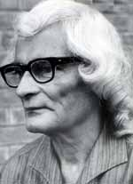
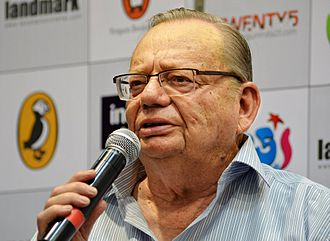
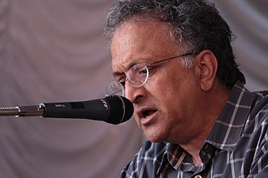

Literature
Sumitranandan Pant

Sumitranandan Pant (20 May 1900 – 28 December 1977) was an Indian poet. He was one of the most celebrated "Progressive" left-wing 20th century poets of the Hindi language and was known for romanticism in his poems which were inspired by nature, people and beauty within. Pant was born in Kausani village, Bageshwar District in what is now the state of Uttarakhand, into an educated middle-class Brahmin family. He is considered one of the major poets of the Chhayavaadi school of Hindi literature. Pant mostly wrote in Sanskritized Hindi. In 1968, Pant became the first Hindi poet to receive the Jnanpith Award, considered to be India's highest accolade for literature. This was awarded to him for a collection of his most famous poems titled "Chidambara".Pant received the "Sahitya Academy" award, given by India's Academy of Letters, for "Kala Aur Budhdha Chand". The Indian Government honored him with Padma Bhushan in 1961 and Padma Vibhushan. Sumitra Nandan Pant composed the Kulgeet of the Indian Institute of Technology Roorkee "Jayati Jayati Vidya Sansthan".
He is also regarded as the "State Poet" of Uttarakhand.
Ruskin Bond

Ruskin Bond (born 19 May 1934) is an Indian author of British descent. He lives with his adopted family in Landour, in Mussoorie, India. The Indian Council for Child Education has recognised his role in the growth of children's literature in India. He got the Sahitya Akademi Award in 1992 for Our Trees Still Grow in Dehra, for his published work in English. He was awarded the Padma Shri in 1999 and Padma Bhushan in 2014.
Ramachandra Guha

Ramachandra Guha (born 29 April 1958) is an Indian historian and writer whose research interests include environmental, social, political, contemporary and cricket history. He is also a columnist for The Telegraph and Hindustan Times. A regular contributor to various academic journals, Guha has also written for
The Caravan and Outlook magazines. His large body of work, covering a wide range of fields and yielding a number of rational insights has made him a significant figure in Indian historical studies, and Guha is valued as one of the major historians of the late twentieth and early twenty first centuries.
He was appointed to BCCI's panel of administrators by the Supreme Court of India on 30 January 2017 on to resign in July of the same year. He has been awarded with Padma Bhushan in 2009, India's third highest civilian award and 2011 Sahitya Akademi Award for "India after Gandhi" Guha was born on 29 April 1958 at Dehra Dun, where his father Ram Das Guha was a director at the Forest Research Institute, and his mother a high school teacher. He was brought up in
Uttarakhand. Guha studied at The Doon School where he was a contributor to The Doon School Weekly.